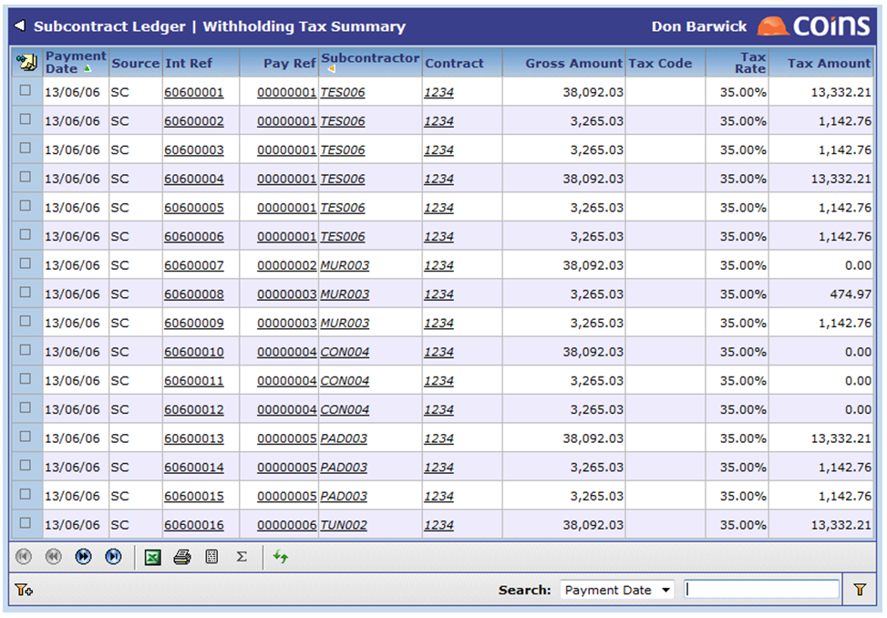

You can
Withholding Tax Summary Screen
For jurisdictions where the tax can be due prior before payment (such as in Oman where it is due 14 days after the earlier of the payment date or the due date for payment), you can use the standard open item reports/enquiries to review transactions which are overdue for payment and where tax may already be due.